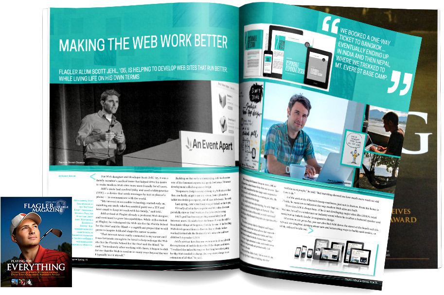

Hi, I’m Scott. I work alongside the bright folks at Filament Group building websites and applications for clients such as the Boston Globe, LEGO, Global News, eBay, and more. In 2014 I wrote Responsible Responsive Design, and back in 2010 I cowrote Designing with Progressive Enhancement. I regularly speak at conferences like An Event Apart, Breaking Development, and Mobilism. I’m an active participant in the open-source community, maintaining projects that focus on accessible, sustainable, and performant practices for cross-device development.
Thanks for stopping by!
Books
Selected Interviews, Videos, Coverage
- 2015 Net Magazine Interview:
- 2015 Flagler Magazine Profile: 
- 2014 LukeW: Notes from An Event Apart: The Elusive, Inclusive Web App
- 2014 The Big Web Show with Jeffrey Zeldman Responsive Images, Picturefill, and Web Standards with Scott Jehl
- 2013 An Event Apart conference Video: Interacting Responsibly (and Responsively!)
- 2013 ShopTalk Radio Show: Episode 88 with Scott Jehl
- 2013 The Big Web Show with Jeffrey Zeldman Episode 83: Scott Jehl
- 2012 Adobe TV Profile: The Boston Globe, Filament Group, Inc. and Upstatement and RWD
- 2012 The Web Ahead Podcast: Smart Responsive Implementation with Scott Jehl
- 2012 .netMagazine: Scott Jehl on the responsive Boston Globe site
- 2012 LukeW: Notes from Event Apart Boston: Interacting Responsibly (and Responsively!), Scott Jehl
- 2012 The Big Web Show: Scott Jehl, interviewed by Jeffrey Zeldman and Dan Benjamin
- 2011 BreakingDev Conference: Video: Interacting Responsibly (and Responsively!), Scott Jehl
- 2010 New Riders: Voices that Matter Video Interview
© 2015 Scott Jehl.